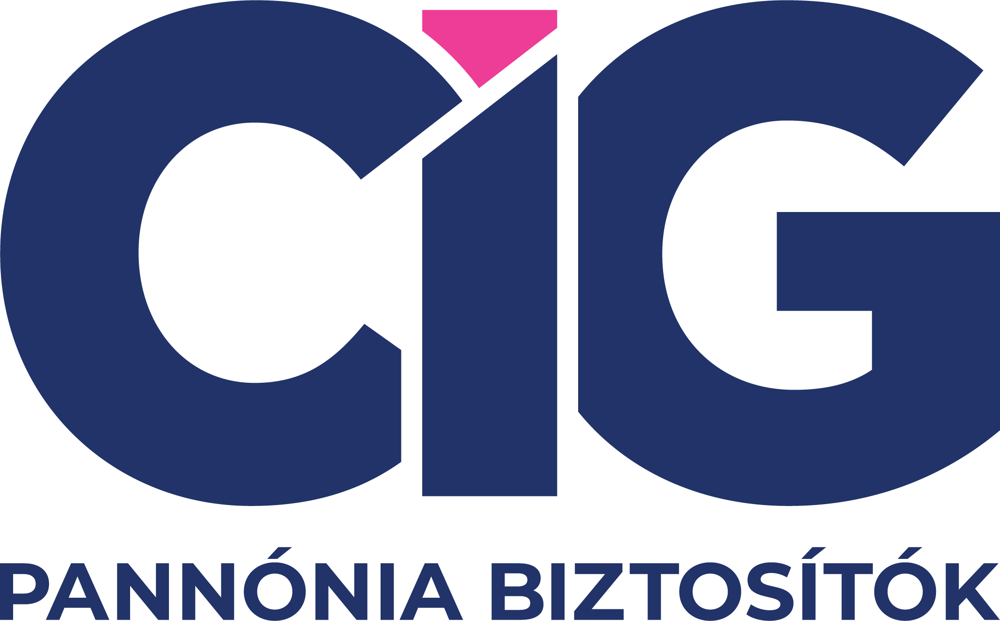

Egy átlagos temetés Magyarországon 400 000 és 1 000 000 Ft között kerül. A kegyeleti biztosítás célja, hogy a hozzátartozóknak ne kelljen ezzel a teherrel szembenézni a gyász idején. Független alkuszként összehasonlítjuk az ajánlatokat: a fedezeti összeget, a karenciát és a díjakat is egymás mellé tesszük.
Kb. 3 perc kitölteni. Visszahívjuk az összehasonlított ajánlatokkal.
A kegyeleti biztosítások fedezeti összege és díja biztosítónként eltér. Megmutatjuk, melyik ajánlatnál mit fed a biztosítás, és mi kerül kiegészítőbe.
A legtöbb kegyeleti biztosításnál 6–12 hónapos karencia van betegségi halálesetre. Pontosan megmutatjuk, mikor és mire fizet a biztosító.
A haláleset utáni adminisztrációban is segítünk: összegyűjtjük a szükséges dokumentumokat, hogy a biztosító mielőbb folyósítson.
A kifizetés feltétele a szükséges dokumentumok biztosítóhoz juttatása. Ezt általában 30–60 napon belül kell megtenni:
Kegyeleti biztosítás kötése előtt a fedezet tartalmán kívül a karencia és a kizárások legalább ennyire fontosak.
Az MNB összefoglalja a haláleseti biztosítások legfontosabb jellemzőit és a fogyasztói jogokat. Kötés előtt érdemes ezt is átnézni.
Betegségből eredő halálra általában 6–12 hónapos karencia vonatkozik. Baleseti halálra a biztosítás azonnal érvényes. A pontos feltételek biztosítónként eltérnek.
Öngyilkosság (különösen a karencia alatt), háborús cselekmény és szándékosan előidézett haláleset általában kizárt. A pontos kizárások biztosítónként különböznek.
A kegyeleti biztosítások között díjban és fedezetben is komoly különbségek vannak. Nálunk ezekben kap segítséget:
Megmutatjuk, melyik biztosítónál mennyi a fedezeti összeg, mi számít alapfedezetnek és mi kerül kiegészítőbe. A karenciát és a kizárásokat is összehasonlítjuk.
Az előgondoskodási biztosítással saját temetési költségeiről gondoskodhat, hogy ezt a terhet ne a hozzátartozókra hagyja. Segítünk megtalálni a megfelelő díjat és összeget.
Alkuszként az ügyfél oldalán állunk. A fedezeti összeg mellett a karenciát, a kizárásokat és a kifizetési eljárást is megvizsgáljuk.
Kattintson a kártyára, mobilon koppintson.
Sokan nincsenek tisztában azzal, hogy egy egyszerűbb temetés is komoly összeget tehet ki Magyarországon.
Egy átlagos temetés 400 000 és 1 000 000 Ft között kerül Magyarországon, a helyszíntől és a szertartás formájától függően. A kegyeleti biztosítás ezt fedezi.
Sokan arra számítanak, hogy az állam fedezi a temetési kiadásokat, ha nincs elegendő megtakarítás.
Az önkormányzati temetési segély összege általában 30 000–100 000 Ft, ami a tényleges temetési kiadásoknak töredéke. A különbözetet a hozzátartozóknak kell előteremteni.
Sokan úgy gondolják, az életbiztosítás haláleseti szolgáltatása a temetési kiadásokat automatikusan fedezi.
Az életbiztosítás haláleseti kifizetése heteket, néha hónapokat vesz igénybe. A temetési számlát viszont azonnal ki kell fizetni. A kegyeleti biztosítás erre az azonnali igényre nyújt fedezetet.
Sokan azt gondolják, hogy egy bizonyos kor felett a biztosítók nem fogadnak el ajánlatot.
Több biztosítónál 70–85 éves korig is igénybe vehető kegyeleti biztosítás, egyes termékeknél orvosi vizsgálat nélkül. A díj és a karencia azonban eltér a fiatalabb korban kötöttektől.
Töltse ki az online ajánlatkérő formot (kb. 3 perc), mi pedig visszahívjuk az összehasonlított ajánlatokkal. Érthetően, elköteleződés nélkül.
A fedezeti összeg általában 200 000 és 2 000 000 Ft között mozog. Egy átlagos temetés Nyíregyházán és a Szabolcs-Szatmár-Bereg megyei régióban 500 000–800 000 Ft körül alakul, amelybe beleszámít a koporsó vagy urna, a sírhely, a szertartás és az adminisztrációs díjak.
A haláleset bejelentése után a szükséges dokumentumok beérkezésétől számított általában 15–30 napon belül folyósít a biztosító. Ez a határidő biztosítónként eltérhet. A kifizetés közvetlenül a megjelölt kedvezményezettnek történik.
Összehasonlítjuk az elérhető kegyeleti biztosítási ajánlatokat, hogy az Ön helyzetéhez a legjobb fedezet-díj arányt találjuk.
Kegyeleti biztosítás mellé ezeket érdemes megfontolni:
5 tévhit a kegyeleti biztosításról – melyiket hiszi el?
A legtöbbet feltett kérdések, röviden, érthetően.
A leggyakoribb kérdések és buktatók egy helyen.
Több biztosítótársaság ajánlatai közül keresünk jó megoldást az Ön helyzetéhez



Rövid PDF útmutató: mielőtt kegyeleti biztosítást köt, ezeket érdemes megvizsgálni. Összegyűjtöttük a leggyakoribb félreértéseket a karenciáról, a kizárásokról, a fedezeti összegről és a kifizetési folyamatról.
Kérje e-mailben a PDF útmutatót: